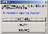
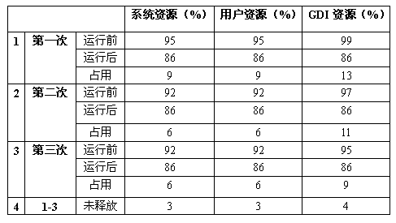

|
|
| 当前位置：电脑报电子版 > 1999 年 > 50 期 > 评测与市场 > IQ搜索王评测报告 |
| 《 IQ搜索王评测报告 》 |
| 网络给我们带来大量的信息资源，与一般广播网络不同，它是一种交互性非常强的网络结构，由用户主动查找资料，而不是被动接收。但用户一般很少知道自己所需资料的网址，由此而产生了“雅虎”和“搜狐”的搜索网站，它们提供了大量的信息，供用户检索资料。然而，互联网是一个非常广阔的天地，它的信息不可能由几个搜索网站就能提供，就目前而言，国内外比较好的搜索网站已达数百个，它们所提供的既有相同的信息资料，也有互补的信息资料。 “IQ搜索王”是一个集多个搜索引擎的搜索工具软件，并对搜索结果进行处理。所以，本次的软件评测就是针对以上出现的情况而进行，旨在为用户方便使用互联网提供参考。 本次评测所使用的系统环境： 1．硬件环境： CPU（PⅢ 450）、主板（微星6163，内置声卡）、显卡（Intel 740）、硬盘（昆腾火球10G）、网卡（Topstar PCI Ethernet）、128kb专线、调制解调器（InterStar 56K）。 2．软件环境： 简体中文Windows 98、简体中文Windows 2000 Professional和Windows 2000 Server 3．浏览器： 简体中文Internet Explorer 5.0、NetScape Communicator 4.61。 安装及卸载  “IQ搜索王”必须经过安装才能正常使用，否则只启动（会比正常安装启动多一个提示窗口，如图一），在开始搜寻时会直接退出程序，以至无法正常搜寻。“IQ搜索王”有18个安装文件，大小共为3.49MB。其安装过程属于Windows标准安装，默认安装目录为“C:\Program Files\Inforian\Quest”，安装完毕后即可启动“IQ搜索王”，而不需要重新启动计算机，由此可见，它并没有在系统启动时载入其运行所需的资料，这样就减少了注册表的负载，以及系统资源不必要的消耗。安装后所有文件共为3.74MB，占用磁盘空间5.27MB。在这三个操作平台上，卸载“IQ搜索王”有两种方式：在“开始”菜单中点取“IQ搜索王”的“移除IQ搜索王”快捷图标即可，或在“控制面板”中“新增/移除程序”中卸载都可以。但“IQ搜索王”为了保证用户的搜索结果不被误删除，所以在卸载时会将“Cache”和“Site”两个目录保存下来，必须由用户自己手动删除，“IQ搜索王”在卸载会检查有无用户资料，所以，如果用户刚安装完毕就卸载时，那么这两个目录同样会被删除。所以，“IQ搜索王”在卸载功能上做得比较人性化。 试运行 安装“IQ搜索王”后会在桌面生成一个快捷图标，所以启动它比较方便。开始运行时，“IQ搜索王”会提示注册（如图二）。“IQ搜索王”共有九个搜索主题，它们主要是根据搜索引擎的类来划分，因为在“IQ搜索王”中预装了数百个搜索引擎，它们各自的主要搜索内容存在差别，由需查找的关键字的内容来决定所选取的搜索主题。 在列表框中可以设置显示的主题、URL、预览、文件大小、准确率、文件最后修改日期和搜索引擎及站点名称等，这些显示可以由用户根据自己需要而设置。在“选项”菜单中可以设置查找的URL是否区分大小写，如果区分则会可能出现因大小写不同而重复出现同一个网址，所以我们建议用户在使用时最好考虑不区分大小写。 “IQ搜索王”支持同时运行多个程序，因为一种程序一次只能选用一个主题进行搜索，而使用多个程序对多个主题进行搜索，既可以节省时间，又可以充分利用网络带宽，并且用户可以将搜索结果保存为HTML文件，以后可以通过浏览器来访问。但我们在用“IQ搜索王”打开其保存的搜索结果时会出现“can't load format file”提示，据资迅人公司介绍，在其客户服务器上已放有一份补充文档（1K），用来修正这个BUG。 可操作性 “IQ搜索王”属于Windows标准化操作，符合Windows用户的基本操作规范。在查找的方式上与一般的搜索引擎相似，熟悉网络搜索引擎的用户一般都不会陌生。“IQ搜索王”界面主要由菜单、工具列、查询界面、显示内容和讯信显示栏等组成，整个布局较好、清晰，初学者容易上手，工具列是菜单中常用命令的快捷方式，并且通过图标较易分辨出每个按钮的功能。九个搜索主题使用页式控件管理，这种管理方式有其优越性，它们可以共用许多内容（如：查询内容、搜寻模式、显示内容及预览面板等）。在查找方面，只要在“查询内容”中输入需要查找的关键字以及它们的组合（由每个搜索主题的提示可知），在“可包括”或“不包括”中输入包括查找的内容或者不包括的内容，再选取“搜寻模式”，执行“开始”按钮并开始搜索，搜索到的网址将会出现在下面的列表框中（如图三）。 当我们需查询过程终止时，只须点击“停止”按钮即可，也可以在查询的过程中访问已经找到的资料，只须通过鼠标的移动来选取资料，单击记录就可以打开设定的浏览器访问网址。但在选取资料时，我们发现这种通过鼠标的移动选取资料的方式不是很好，由于电脑的反应速度的问题，容易产生鼠标粘滞的感觉，并且单击就进入访问方式，违背用户操作习惯。所以，考虑到用户的使用习惯，我们软件评测小组建议：在列表框中，通过单击鼠标左键来进行资料的选取，通过双击左键激活浏览器访问网址。 资源占用及稳定性 系统的资源占用是评价一个软件的重要指标，如果软件对系统的资源占用比较大，容易造成系统不稳定。在本次评测中，为了能得到较准确的结果，所以我们在Windows 98的系统中只安装了与本次评测有关的软件：IE5.0、Netscape Communicator 4.61和Taskinfo98 2.0 Beta版（具有权威性的测试软件）等工具软件。“IQ搜索王”在我们进行的资源占用测试中发现：刚开始运行“IQ搜索王”时，其内存占用为7.7MB,但会随着搜寻记录的增多而增多，并且CPU的占用最高达到98.5％。为了测试这种内存占用的增长情况，我们选择“中文网站”的搜索主题，查询内容用“MP3”（找出与MP3有关的报纸类网站），搜寻模式就选择“完整搜寻”方式。从结果来看，我们共找到94笔记录（即网址），内存占用从刚开始时的7.67MB增加到10.35MB，所以共增长了近2.68MB的内存占用。 “IQ搜索王”的系统资源、用户资源和GDI（图形设备接口）资源分别占用9％、9％和11％，相对来说，GDI资源占用比较多。我们为了测试其释放资源的情况（启动时没有载入任何其它程序），一共连续运行及退出程序三次，测试结果如表一：系统资源、用户资源和GDI资源分别有3％、3％和4％没有释放，经过我们追踪发现：这主要是由于在第一次运行时，程序会载入几个共享的动态链接库，而这些动态链接库会在退出程序时驻留内存，为下次快速启动提供保障，所以会出现部分资源被占用的现象。 主要功能 搜索功能是“IQ搜索王”的主要功能，并且设置有九个搜索主题，利用每一个搜索主题适用的搜寻关键字逻辑不同来区分这九个搜索主题。由于每个用户每次所搜寻的资料也许不同，如果都利用一个搜索主题来查找资料，必然造成大量的时间和系统资源的浪费。从搜索的算法来考虑，将这些搜索引擎进行合理的分类，当然不是越细越好，这样也会违背查找算法（尽量在最短的时间内找到所需资料）。所以“IQ搜索王”搜索引擎利用关键字的逻辑不同而进行查找，是符合查找算法的。  评测总结 从前面的评测结果来看：“IQ搜索王”可以支持微软的三个操作平台（简体中文Windows 98、Windows 2000 Professional 和 Windows 2000 Server）；并且它的界面风格和可操作性都属于典型的Windows风格；磁盘空间占用为5.27MB，内存占用7.67MB，相对来说，其资源占用较大一些（系统资源9％、用户资源9％和GDI资源11％），但测试过程中，没有出现操作迟缓或蓝屏、死机现象，所以，“IQ搜索王”的系统稳定性及与Windows的兼容性都比较好。“IQ搜索王”这种集三百多个搜索引擎于一体，通过搜寻关键字逻辑不同来划分为九个搜索主题，本身是一种比较好的思路，特别是它查询内容的逻辑组合，以及三种搜寻模式（完整、标准和快速）体现了一种比较人性化的查询方式。因此，“IQ搜索王”作为一个基于搜索引擎之上的搜索使用Meta－Search(同步搜索功能)，对于初级网民以及需要大量查找资料的用户来说“IQ搜索王”都是一款比较合适的网络搜索工具。 |
| 下载本期推荐软件 | 页 首 |
| CPCW网站版权所有，电脑报网站编辑部设计制作发布 |